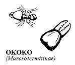

|
FRENULUM TREATMENT
NEW: See "Tying the Frenulum"The simplest safest
cheapest best method (no scars) of treating frenulum breve.
Use Harmen's Pages for tying and/or a second opinion on frenulum treatment.
The quickest treatment would be an incision (discussed below).
Circumcision is an inaccurate operation for this condition. Western
medicine often offers the "frenuloplasty". From a surgical point
of view this is a very small operation. It takes around twenty minutes
surgery and about an hour with the preparation. It is performed as
an outpatient. Normally there is a ten days to two weeks recovery time. |
General
Most men being operated for this condition, do not realise how extremely
sensitive and erotic the area round the frenulum can be. Previously
the frenulum has held the foreskin forward; experimentation has been
hindered and any stimulation in the area may have simply been painful.
The area around the frenulum is the most sensitive area on the phallus.
If the area is sensitive to pain at present, this will turn to pleasure
after being operated. Once you get it treated then the area around the frenulum under the glans will be a new source of pleasure. On normal men, the frenulum itself appears to be usually not very sensitive, however the area around the frenulum is often claimed to be the most sensitive on the penis.
Due to the curious nature of this condition men often feel they
suffer from what feels like a redundant or extra long, foreskin and request circumcision.
FRENULOPLASTY
Though a circumcision will leave the frenulum breve
little or nothing to pull on it is an inaccurate treatment for this
condition. Western medicine offers the "frenuloplasty". From a surgical point of view, this is an insignificant
operation. It takes around twenty minutes surgery and about an hour
with the preparation. It is performed as an outpatient.
For some reason practicing surgeons and urologists often describe
the operation as an elongation of the frenulum, this is misleading,
it leaves the impression that you will receive a longer frenulum. Somehow,
by elongating they mean spreading it out, and I presume when you spread
a frenulum which is too short it disappears - The frenuloplasty does
NOT elongate the frenulum, it sews the frenulum into the shaft skin.
The frenuloplasty is performed by cutting a small series of either
z or y shaped cuts, which when stitched together will form a single
line, or a row of 5 or 6 small horizontal lines, (both are barely visible).
It takes about 2 weeks for the stitching to heal and 4 weeks before
the area becomes fully functional again. This is called a z-plasty
or y-plasty. (Any Urologist reading this is more than welcome to provide
a better description - for example: Does the z plasty lead to horizontal
scars and the y plasty to vertical?).
The operation which leaves one scar as a single line would be visually
superior to the 5 or 6 horizontal lines, though possibly one vertical
scar might present problems with stretching in old age.
For those who wish this easily available option, please find a
surgeon who is practiced in performing the frenuloplasty.
I have heard of around a thousand frenuloplasties without any problems
Warnings: One man complained of a hard scar after a laser frenuloplasty. One man was traumatised after frenuloplasty when a relative phimotic ring led to paraphimosis. If you have a mild phimotic ring which could lead to paraphimosis once the frenulum breve is removed, - the simplest precaution to take is please read the page on paraphimosis - or stretch the ring enough before being operated - or tell the operating surgeon about this.
Pictures of a Frenuloplasty
Frequency:
There are no medical statistics on this condition except
among farm animals. An urologist in Hamburg, said he operates
"approximately once a month,... basically the average age group
is around 17 to 27 years old" (8).
(There are 200 Urologists in Hamburg and a population of 2 million.)
AN INCISION
If you consult a surgeon or urologist with full confidence that an
incision is what you wish for, then I feel sure he could be persuaded
to perform this operation.
Various Ideas on Incisions
The frenuloplasty is a surgically proficient operation which takes
into consideration the requirement of being neat. A simple incision
may leave a little dangling bit of skin, which would be untidy.
An interesting fact is that some anatomically normal men pull on
their frenulum as a form of masturbation, (this was reported by Bryk,
by Kinsey, and men who I interviewed). The reason I mention this is
I have heard of one Philippine man, who had been cut ritually, and
enjoyed pulling on the resultant flap of skin.
From an Incision there are three possibilities
One or two tiny flaps of skin which you may or may not like,
Often small flaps of skin will recede into the shaft skin
A second operation at a later date, to remove the flaps
DISCUSSION OF APPROPRIATE TREATMENT
If the frenulum was checked before puberty, and if it is too short,
a simple incision may be all that is necessary. This will avoid any
stitch marks or any stretching problems with the scar. If an incision
is made in the frenulum breve at an early age, there is every reason
to believe (especially with a thin frenulum), that the remaining tiny
hanging flaps of skin, will simply recede into the shaft skin and the
glans.
Theoretically, this incredibly simple incision should be made in
exactly the same place where the frenulum would otherwise rip.
EXTRA NOTES
The Complete Frenulum
Studies (Treatment) describe various methods of correcting the
frenulum breve.
Modern methods include
"Z" plasty
Ancient or traditional methods inlude the Okoko used by the
incredible Luo peoples. "The Okoko is the male soldier ant. ... its incisor
like proboscis .... would then tighten grip to sever through the
connective tissue ..." |
 |
Stretching the Frenulum is sometimes advised - It must considered as an experiment, usually requiring several months of 5 times daily stretching. I feel this is more problematic than almost any other method - requiring a dedication which verges on obsession - however some men may wish to use this method.
Testing this would only be intelligent for someone
with a mild degree of brevity where the frenulum was not connected near the meatus, and a frenulum which was not hemmed or topped with a string.
I`d encourage
experimenters to think about steroids which may thin the frenulum enough
to enable a natural stretch ...(or more probably a controlled rip?) - see the reports on betamethasone
Note: such experiments should never be conducted
with children.
The majority of reports I have heard are that
stretching the frenulum rips it. Often a sudden stretch causes ripping.
A gentle regular stretching would be necessary - see stretching.
|